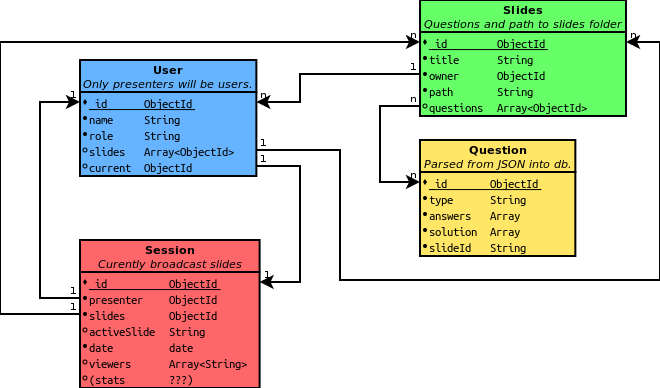

What is ASQ?
This web app allows to broadcast a slideshow synchronously to multiple clients.
ASQ allows the lecturer to give questions to the students and recive their answers in real-time.

Workflow
- Daily meetings with the TA (Vassilis)
- Code and Wiki on GitHub
- Seperated branch for each feature
- EtherPad for discussions
Database model
Currently...
- Max is working on User Interface
- Magarita is working on User Authentification
- Jacques is working on Slideshow rendering & synchronisation
Challenges
- Developing different question types (more than multiple choice)
- Storing, sending and rendering questions and answers
- Database structures
- User authentification and security
- URL structure and routing
Demo of user interface